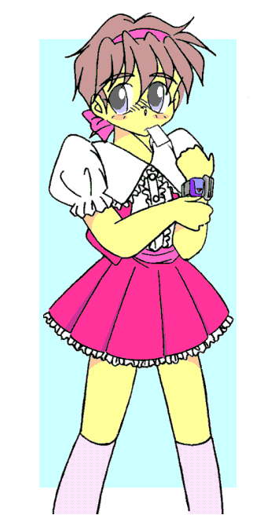

――華代ちゃんシリーズ・番外編――
（ハンター・シリーズ）
『未来への手紙』
作：天爛
各シェアワールドの詳細設定については、以下の公式ページを参照にしてください。
「いちごちゃん」シリーズの詳細はこちら
http://www7.plala.or.jp/mashiroyou/Novels-03-KayoChan31-Ichigo00.htm
「華代ちゃん」シリーズの詳細はこちら
http://www7.plala.or.jp/mashiroyou/kayo_chan00.html
「華代ちゃんシリーズ・番外編」の詳細はこちら
http://www7.plala.or.jp/mashiroyou/kayo_chan02.htm
を参照して下さい
俺はハンター３９号。
『歩く自然災害』真城華代の被害者が少しでも減るように、日夜尽力している。
そして今日、俺の本当の戦いが始まる……。
今日、俺は有給をとって故郷の神社に来ていた。
ボス辺りが「有給なんかとる奴なんか華代被害に遭えばいいんだ！」と暴言を吐いていたが、気にしなくてもいいたろう。
今日、俺がここへ来た理由、それはガキの頃に埋めたタイムカプセルを掘り起こす為だ。
近くこの神社は建て直される。そうなればタイムカプセルを掘り起こすのが困難になってしまうだろう。
そこで俺は、今日、そのタイムカプセルを掘り起こそうと思い、ここへ来たのだ。
地図を見て目的地へ向かう。自分で言うのもなんだが、子供ながらによく出来ている。これで字が間違えて無ければ完璧なんだか……。
ちなみに俺の手にした地図には汚い字で、「タイマかぷせる」と書いてあった。麻薬かよ……。
直ぐに目的地に着き、俺はタイムカプセルの掘り起こし作業に入った。神社の主には事前に事情を説明しているので問題無い。
ブツは直ぐに見つかった。掘り起こしたブツは古ぼけたクッキーの缶で、当時のおもちゃやら未来の俺への手紙、母に撮られた写真などが入っていた。
「わぁ、かなり古い缶ですが、これってなんなんですか。」
ふと、後ろから声を掛けられた。この状況からして多分あの子だろう。
「あぁ、俺が華代ちゃんぐらいの歳に埋めたタイムカプセルだよ。」
「はりゃ？ おにいちゃん、私の名前知っているんですか？」
「そりゃ有名人だからね。そうだ、華代ちゃんもこの中身見るかい？」
「えっ、いいんですか？」
「もちろん。」
俺は公私混同しない主義だ。仕事中ならば華代ちゃんを無害化しなければいけないが、今日は非番。いわば公私の私だ。
そうなれば話は別だ。俺の家は幕末の頃より、『白い天女』を崇拝している。そしていまも天女から貰った御札を神棚に飾ってある。
つまり非番中の今、『白い天女』を邪険にする云われは無い。
「あっ、これ可愛い。この子お兄ちゃんですか？」
華代ちゃんは母が撮った写真を手にし、質問してきた。
「えっ？ あっ、そうだよ。ちょうどこれを埋めた頃の写真だ。恥ずかしくて一緒に埋めたんだろうな。」
「お兄ちゃん、これは？」
華代ちゃんは、缶の中に入っていた腕時計みたいな形をしたおもちゃを指差して訊いてきた。
「俺が子供の頃にやっていた変身ヒーローのおもちゃだよ。たしか『トラン・シェイダー』ってやつで、ここにあるスリットにカードを通して“転影（ターン・シェイド）！！”って叫ぶと変身するんだ。……懐かしいなぁ、子供の頃、そのヒーローにすごく憧れていたのを今も思い出すよ。」
「そうなんだ♪」
「あっ、手紙がある……。読んでもいい？」
それは昔の俺が、未来の――つまり、今の俺に送った手紙だった。
「いいよ。じゃあ、一緒に読もう。」
その手紙には、今の俺は元気にしているか、どんな仕事をしているか、夢は叶ったかなど書いてあった。
「夢、叶ったんですか？」
「いや、さすがに叶わなかったかな。あっ、人の役に立つって意味じゃあ、半分叶っているか……。」
この頃の夢、それは『変身ヒーローになって人の役に立ちたい』というものだった。
「あ、あの、よければ今、その夢叶えましょうか？」
変身ヒーローになる。つまり、元に戻れるということ。なら……、
「お願いしてもいいかな？」
「はい♪」
「あっ、注文があるんだけどいいかな？」
「いいですよ、サービスします。」
「まず、これを使って変身したい。」
俺は先程のおもちゃを指差して、そう言った。
「はい。……あっ、でもカードがありませんよ？」
「なら、名刺を使おう。通した名刺の人物に変身できるようにしよう。」
「それ、いいですね♪ あっ、そういえば私、名刺を渡すのを忘れてました。」
てへっと舌を出し、華代ちゃんはポシェットから名刺を取り出して俺へ差し出した。
「はい、どうぞ。」
「ありがとう。実は俺、名刺集めるのが趣味なんだ。これでコレクションがまた１つ増えたよ。」
「喜んで貰えてよかったです♪」
「……で、変身時間なんだけど、１日最大８時間しか変身できない――これ、当時のヒーローの設定なんだけど、どうかな？」
「大丈夫です。できますよ。」
「よかった。じゃあ、あとは……」
俺と華代ちゃんは、変身についての設定を打ち合わせした。
途中から、喫茶店へ移動して華代ちゃんにパフェを奢ってあげた。
華代ちゃんは報酬は貰えないと遠慮していたが、俺が報酬でなくプレゼントだと言うと、喜んで受け取ってくれた。
「では、行きますよ。」
華代ちゃんがそう声を上げると、例のおもちゃは一瞬光を放った。
「はい、出来ましたよ。」
「ありがとう。あれ？ これなんか丈夫になってない？」
「あっ、壊れたらいけないと思って丈夫にしときました。」
「おっ、さすが華代ちゃん。気が利くねぇ。」
「えへへへ。あっ、じゃあ、さっそく変身してみてください。」
「わかった。名刺は……ななっちのでも使うか。じゃ、“転影（ターン・シェイド）！！”」
そう叫んだ瞬間、俺の体は光を放ち、次の瞬間、俺の視線はいつもの俺のものとは異なっていた。
「うわぁ、成功です。まったく別人です。」
「あっ、華代ちゃん、鏡持っている？」
俺がななっち（ハンター７号）の声でそう尋ねると、華代ちゃんはポシェットから手鏡を取り出して俺の顔を写してくれた。
「おぁ、この顔、まさしくななっち。ん？ でも両目が黒いな……そうか、名刺を貰ったときの姿になるんだな。なるほど。」
「はい、そうです。あっ、初回特典として、元に戻った時に子供の時の姿になるようにしておきました。やっぱり、子供の時の夢だから、夢を抱いてた子供の時の姿の方がいいですよね？」
「えっ！？」
「あ、気にしないで下さい。パフェ奢ってくれたお礼ですので。じゃあ、私これからお仕事なんで失礼しますね。」
そう言って、華代ちゃんは小走りで去っていってしまった。
俺はある不安に駆られ、変身を解くことにした。
「“戻影（リターン・シェイド）！！”」
俺の体は再び光を放ち、視線が再び切り替わった。
華代ちゃんの置いていった手鏡を手にして顔を写すと、写真に写ってた俺の姿になっていた。
母に写された写真、それは母に女装させられた時のもの……そして今、俺は同じ服を着ている。
唯一違うのは……、今服の下にあるのが完全な女の子の体だということだけだった……。
「で、３９号……いや、半田未来（みく）は今どうしてる？」
「いまは１号（苺Ｖｅｒ）に変身して引き籠もってるそうです。」
「…………割と余裕みたいだな。」
「…………ですね。」
◆次回予告◆
毎日の戦いの中、俺はある朝とひとりの少女に出会った。
その少女は『黒い天女』に連れられて、ここに来たという。
この少女の正体は一体……。
次回、ハンター３９号。「過去との邂逅」
いま、俺の本当の戦いが始まる……。
※なんとなくの雰囲気なので無視してくださいｗ
《おまけ》
※『トラン・シェイダー』使用上の注意
変身に『力ある物（＝華代ちゃんの名刺など）』を使用すると、完全に（精神まで）その人物に変身してしまい、時間が来るまで戻れなくなります。
ご注意ください。
《後書きというかなんつうか》
華代被害者は特にハンターの場合、なんらかの被害を被らなければならないという理論のもと、変身前の姿を女性化した姿にし、且つ本来の自分に（改名前の名刺で）変身できる時間を制限してみました。
華代被害に合う前の自分にもなれるので、一応は可逆もの……のハズですが、他人への変身の方がネタが広がりそう……。
あと『白い天女』についてはいずれ書くつもりです。まあ、華代ちゃんのおかけで娘を手に入れた母親が華代ちゃんを『白い天女』として崇拝した。という程度ですがｗ
では、気付いたら“転影（ターン・シェイド）！！”を“Ｔ・Ｓ”と略されてるんだろうなと思いつつ……。
◆半田 未来（はんた みく） 人類が「真城華代」に対抗するために作った組織、「ハンター」のエージェント。 華代の能力によって性別を変えられた人間を元に戻すことが出来る。 私生活では代々の『白い天女』（＝華代ちゃん）擁護派＆『黒い天女』（＝空 魅夜子）否定派。 だか公私混同はしない主義の為、仕事には影響していない模様。 有給中に華代ちゃんに出会い、変身能力を持つ９歳ぐらいの女の子に変身させられた。趣味と実益を兼ねた名刺コレクター。 左手につけた変身機能つき腕時計“トラン・シェイダー”のスリットに名刺を通すことでその人物になることが出来る。変身時の掛け声は“転影（ターン・シェイド）！！”、戻るときは“戻影（リターン・シェイド）！！”。 変身可能な時間は、１日最大８時間。 ちなみに『力ある名刺』で変身しようとすると、完全に（精神まで）その人物に変身してしまい、時間が来るまで戻れなくなる。（正しくは変身中の意思で戻らない。） 華代被害に遭ったあとは、無理やり着せ替え＆変身（いちごのメイド時代とか）させようとする水野・沢田両女史との戦いの毎日。 |
 |
□ 感想はこちらに □